Technical report
| Team name | [fill in] |
|---|---|
| Members (name, SRN) | [fill in] [fill in] [fill in] |
| Repository | https://github.com/Greninja34/ml_hackathon |
| Date | 18 November 2026 |
Every number, table and figure in this report was produced by the code in the repository; the file it comes from is named with each figure or table (paths are relative to the repository root).
Summary. PathSnap snaps noisy GPS points onto a road network. For every GPS point it scores all road arcs within 75 m with a Bayesian-tuned XGBoost classifier (18 relative geometric features), then an HMM decoded with Viterbi chooses the arc sequence that is both probable and drivable on the network. On the 10 student-testing trips, observation-level top-1 accuracy is 89.95 % for the classifier alone and 96.51 % after HMM decoding (route continuity 93.8 % → 98.2 %). A single final run on the 10 evaluator trips, after every choice was frozen, gives 84.73 % → 94.93 %. The system is served by a FastAPI backend (Laptop 1) and a Streamlit + Folium UI (Laptop 2).
Each trip consists of a GPS trajectory (.track: longitude, latitude, time), a road network (.nodes with coordinates, .arcs as directed node pairs whose row index is the arc id) and, where supplied, the reference route (.route: arc ids in travel order). The task is to return the road arc each GPS observation lies on and a coherent predicted route.
We cast map matching as candidate classification followed by sequence decoding:
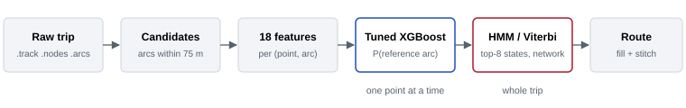
src/pipeline.py; the API runs exactly this function).Partitions used. EDA (Section 2.1–2.3) used the 80 training and 10 student-testing trips. Model fitting, cross-validation and all tuning used the training trips only. The 10 evaluator trips were not opened until the final evaluation in Section 8. Each figure caption states its partition.
| Item | Value | Item | Value |
|---|---|---|---|
| Trips (train / student_test / evaluator) | 80 / 10 / 10 | GPS points (train + student_test) | 227,577 |
| Points per trip (min / median / max) | 262 / 1,496 / 19,313 | Arcs per trip (min / median / max) | 649 / 18,761 / 307,392 |
| Route arcs per trip (min / median / max) | 59 / 272 / 2,266 | Steps exactly 1 s apart (mean over trips) | 94.3 % |
| Trips with a time gap > 60 s | 23 | Largest gap | 153,064 s |
| Arcs with a reverse twin (mean) | 92.2 % | Weakly connected components per trip (median / max) | 19 / 421 |
| Largest-component share of nodes (min) | 0.693 | Reference route fully connected (min over trips) | 0.9813 |
Source: results/eda/summary.md, results/eda/inventory.csv (scripts/01_eda.py). Partitions: train + student_test.
| Check | Result | Decision |
|---|---|---|
| NaN values in tracks / nodes | 0 / 0 | None needed |
| Longitude / latitude out of range | 0 | None needed |
| Duplicate or non-monotonic timestamps | 0 / 0 | None needed |
| Arcs referencing a non-existent node; route arcs referencing a non-existent arc | 0 / 0 | None needed |
| Zero-length arcs | 106 | Never used as candidates (no geometry) |
| Isolated nodes | 0 | None needed |
| Time gaps > 60 s | 23 trips | Kept (real behaviour); handled by time-gap features and in the HMM |
| GPS points with no arc within 75 m | 13,572 (6.0 %) | 9 trips; 12,855 in trip 54 alone; none in student_test. Filled after decoding (Section 5.4) |
| Reference route far from the GPS (median > 15 m) | 2 trips (33, 54) | Flagged unreliable; excluded from training |
The files are therefore complete and internally consistent; the real data-quality problems concern meaning, not format: GPS noise, time gaps, fragmented networks, and reference routes that do not always follow the GPS.
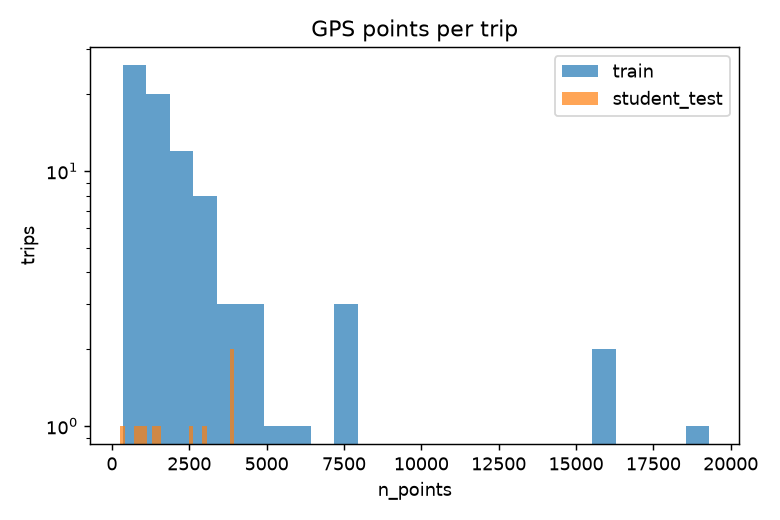
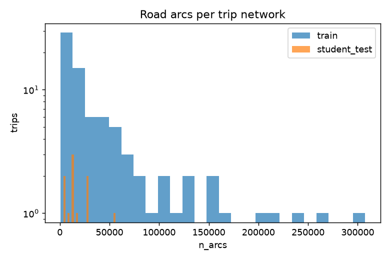
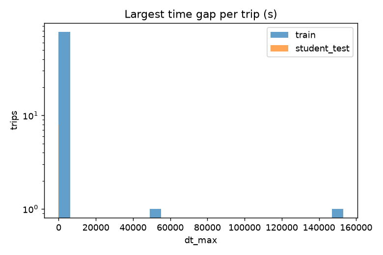
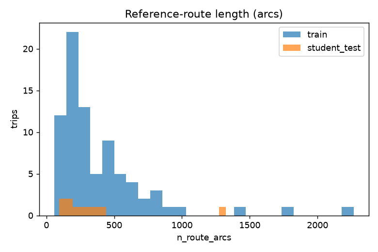
src/data_io.py)..route lists arcs, not points (trip 1: 1,315 points, 525 arcs). Each point is aligned to one route position by dynamic programming: the position may stay or move forward in time, never backward, at a cost equal to the point-to-arc distance plus 0.05 m per skipped arc. The alignment was forward-only on all 90 trips with a median point-to-arc distance of 4–7 m on normal trips (src/labeling.py). Labels are used only for training and scoring.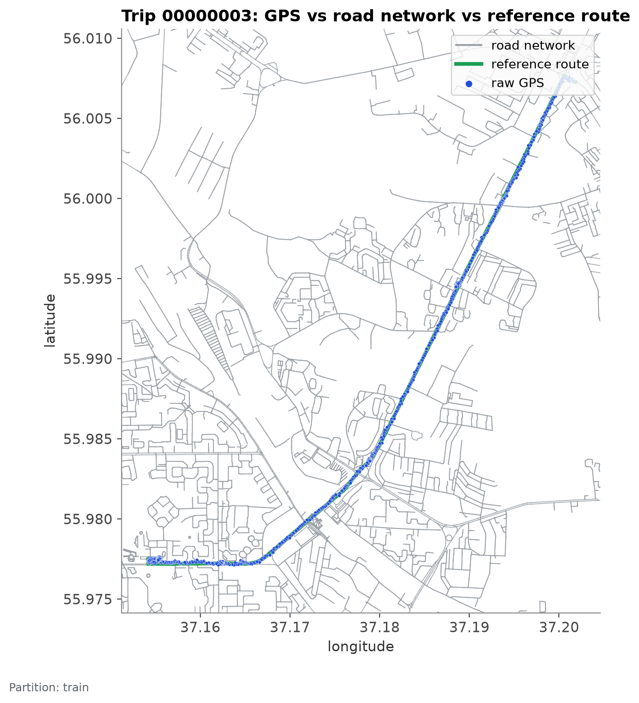
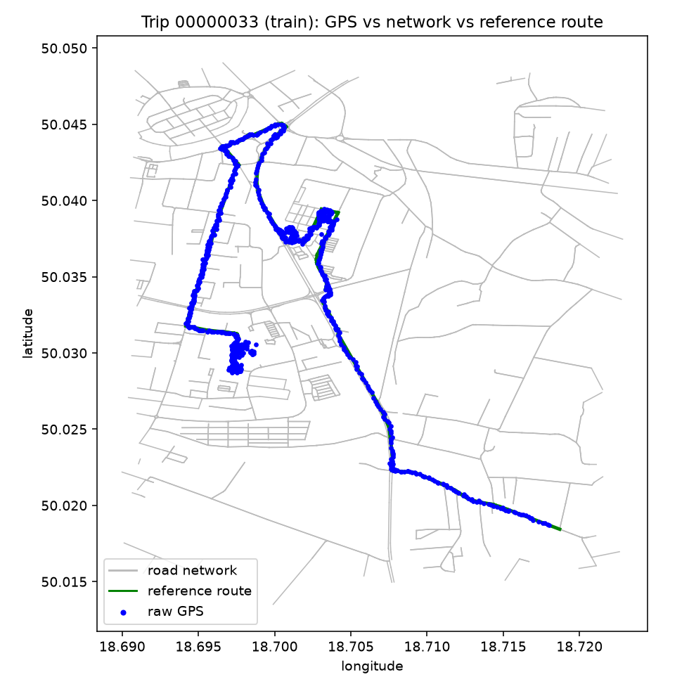
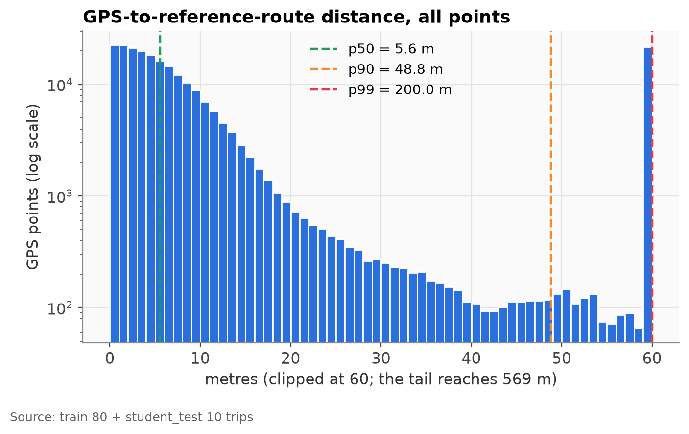
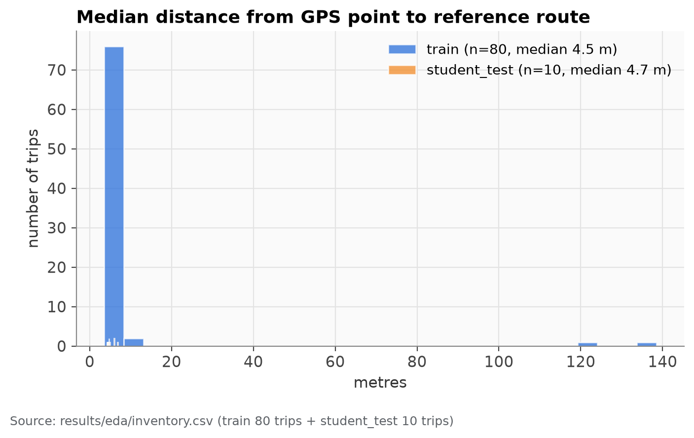
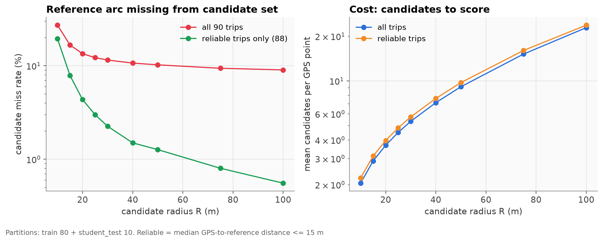
Rule: only relative geometry and kinematics; no arc ids and no absolute coordinates, because every trip is a different city and such values do not transfer. The same code (src/features.py) is used for training and inside the API, and it never reads labels.
| Group | Features | Reason |
|---|---|---|
| Position (5) | dist, t_frac, dist_minus_min, dist_rank, n_cands | How close the arc is, and how close relative to the other candidates of the same point; relative closeness transfers across cities. |
| Direction (4) | cos_heading, heading_ok, ds_span, has_reverse | Separates an arc from its reverse twin: cosine between the motion over points k−2…k+2 and the arc direction; heading trusted only if the car moved ≥ 3 m within ≤ 10 s; forward progress of neighbouring points along the arc. |
| Fit to trail (4) | d_prev, d_next, d_mean_win, speed_ms | Does the arc also fit the neighbouring points (±2 and an 11-point window)? A single noisy point cannot pull the decision. |
| Road shape (3) | arc_len, deg_out_end, deg_in_start | Segment length and junction degree. |
| Time (2) | dt_prev, dt_next | Marks points next to a time gap. |
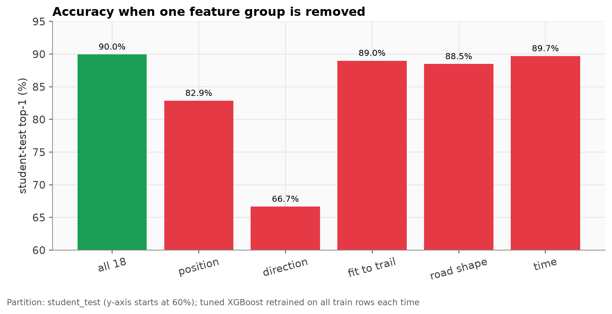
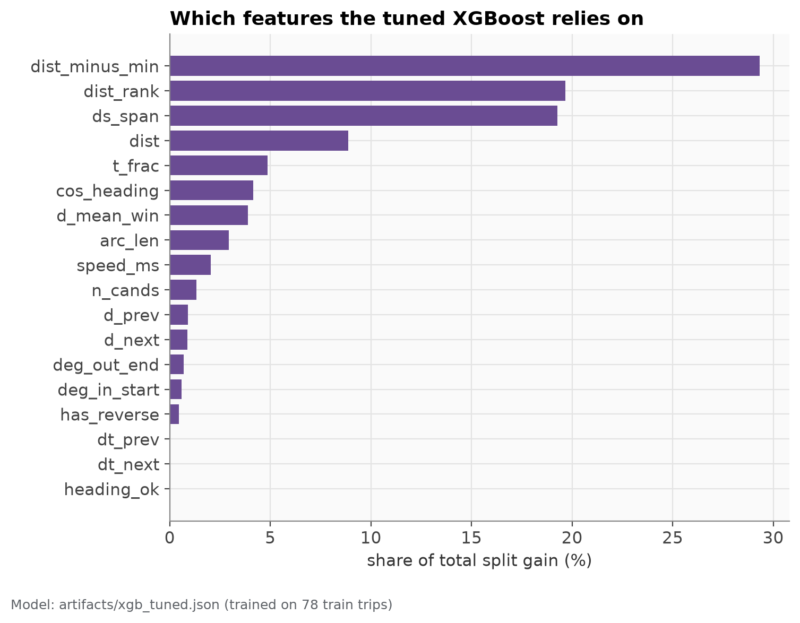
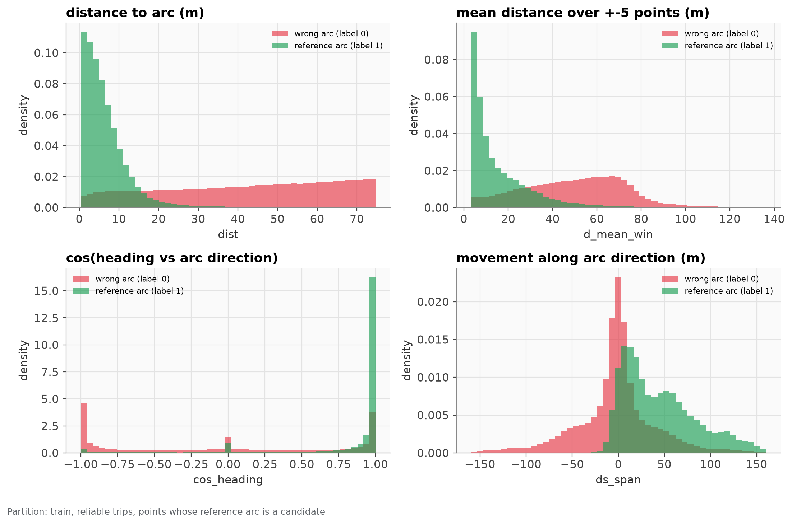
The feature set was fixed before the ablation and was not changed after seeing it, so student_test was not used for feature selection.
Protocol. All seven models use the same data, the same seed (42) and the same folds: 5-fold GroupKFold grouped by trip over the 78 reliable train trips (~575,000 rows and 15–16 trips per fold). Each model is then refitted on all 78 trips and evaluated once on the 10 student_test trips (19,139 points, 356,362 candidate rows). Code: scripts/05_models.py; log: results/models/experiment_run.log.
Metrics. Observation-level top-1 accuracy (for each GPS point, is the highest-scored candidate the reference arc?) is the primary metric, because it is exactly the decision the system makes. Macro F1, precision and recall are computed on candidate rows at a 0.5 threshold, giving the rare positive class (6 %) equal weight. Log loss measures probability quality, which matters because the HMM uses log-probabilities as emissions. Route continuity is the share of consecutive chosen arcs that are identical or directly connected. The candidate miss rate (0.8 % at 75 m) bounds every model equally.
| Model | Algorithm family | Key configuration | CV macro F1 (± std) | Top-1 accuracy | Route continuity | Student-test macro F1 | Log loss | Inference time (ms / 1k rows) |
|---|---|---|---|---|---|---|---|---|
| XGBoost | Gradient boosting | 300 trees, lr 0.1, depth 8, hist, GPU | 0.9349 (0.023) | 0.8952 | 0.9387 | 0.9393 | 0.0305 | 0.19 |
| Random Forest | Bagging ensemble | 100 trees, depth 16, min leaf 5, 25 % bootstrap | 0.9342 (0.022) | 0.8886 | 0.9305 | 0.9364 | 0.0314 | 0.70 |
| LightGBM | Gradient boosting | 300 trees, lr 0.1, 63 leaves | 0.9330 (0.023) | 0.8889 | 0.9240 | 0.9377 | 0.0356 | 2.19 |
| MLP | Neural network | 64-32 ReLU, Adam 1e-3, batch 4096, early stopping, GPU | 0.9299 (0.021) | 0.8871 | 0.9374 | 0.9340 | 0.0330 | 0.03 |
| Logistic Regression | Linear | C = 1, lbfgs, scaled | 0.9152 (0.021) | 0.8734 | 0.9267 | 0.9175 | 0.0440 | 0.08 |
| KNN | Instance-based | k = 25, distance-weighted, 8,000 training points | 0.8992 (0.020) | 0.8353 | 0.9197 | 0.8997 | 0.0576 | 108.27 |
| Gaussian Naive Bayes | Probabilistic | var_smoothing 1e-9, scaled | 0.7502 (0.010) | 0.7953 | 0.9214 | 0.7421 | 0.5412 | 0.10 |
Source: results/models/model_comparison.csv. Top-1, continuity, macro F1 and log loss are on student_test. Training times (full refit): XGBoost 5.9 s, Random Forest 72.6 s, LightGBM 23.9 s, MLP 19.7 s, Logistic Regression 10.6 s, KNN 0.03 s, Naive Bayes 0.7 s. CV top-1 (mean): XGBoost 0.8857, Random Forest 0.8827, MLP 0.8797, LightGBM 0.8786, Logistic Regression 0.8749, KNN 0.8401, Naive Bayes 0.8307. All metrics are applicable to all models (every model outputs a probability per candidate row).
Model selection. The fold-to-fold standard deviation of CV macro F1 (~0.02) is larger than the differences between the four best models, so on F1 alone they are statistically tied. XGBoost was selected because it is first on both CV macro F1 and CV top-1, has the best student-test log loss (important for the HMM emissions) and continuity, and is the fastest of the strong models to train. The choice was made on cross-validation; student_test confirmed it. Fold scores vary mainly with the trips in each fold: every model except Naive Bayes is lowest on fold 1 and highest on fold 4 (XGBoost top-1 per fold: 0.825, 0.863, 0.918, 0.938, 0.885).
Each model answers A (understanding), B (training and configuration) and C (results). "Train top-1" is measured on a random 15,000-point sample of the training rows with the final model.
A1–A2. Suitability, strengths and limitations
A linear model that weights the 18 features and passes the sum through a sigmoid. It is the natural baseline for a binary "is this the right arc?" score and produces genuine probabilities. Strengths: fast (10.6 s), stable, cannot overfit much. Limitation: a single linear boundary cannot express interactions such as "trust heading only when the vehicle is moving", which our features need.
B5–B6. Hyperparameters and objective
C = 1.0 (inverse L2 strength), lbfgs solver, max_iter 300, standardised inputs. Objective: binary log loss plus an L2 penalty on the weights.
C7–C9. Results and fit
Student-test top-1 0.8734, macro F1 0.9175 (precision 0.9173, recall 0.9176), log loss 0.0440. Train top-1 0.8765 vs test 0.8734: no gap and the lowest scores of the non-trivial models, i.e. mild underfitting caused by the linear form, not by lack of data.
A1–A2
Models each feature as a Gaussian per class and multiplies the evidence assuming independence; a cheap probabilistic baseline from another family. Strength: trains in under a second. Limitation: our features are strongly correlated (dist, d_prev, d_mean_win all measure distance), so the same evidence is counted several times and probabilities become overconfident.
B5–B6
var_smoothing = 1e-9, standardised inputs. Objective: maximum likelihood of per-class Gaussians (closed form, no iterative loss).
C7–C9
Top-1 0.7953, macro F1 0.7421 (precision 0.6834, recall 0.9404), log loss 0.5412, about ten times worse than the others. Train 0.8301 vs test 0.7953: low on both, i.e. underfitting from a violated assumption, with poorly calibrated probabilities that would mislead the HMM.
A1–A2
Scores a candidate by a distance-weighted vote of the 25 most similar training rows: similar geometric situations should share the answer. Strength: no training, flexible boundary. Limitation: prediction compares each query with every stored row (108 ms per 1,000 rows, 38.6 s for student_test), and distance in 18 mixed features is a weak similarity measure. It was therefore trained on 8,000 points; with all 2.88 M rows prediction would take hours.
B5–B6
k = 25, weights = distance, standardised inputs, 8,000 training points per fit. No loss function (lazy learner).
C7–C9
Top-1 0.8353, macro F1 0.8997 (precision 0.9218, recall 0.8801), log loss 0.0576. Train 0.8676 vs test 0.8353 (3.2 points): limited by the subsample and mildly overfit.
A1–A2
Averages many decision trees, each grown on a bootstrap sample with random feature choices. Trees capture conditional rules ("if heading is reliable use it, else rely on distance") without scaling. Strengths: stable, good probabilities. Limitations: slowest to train (72.6 s on 32 CPU threads) and large.
B5–B6
100 trees, max_depth 16, min_samples_leaf 5, max_samples 0.25 (each tree on a 25 % bootstrap), 32 threads. Split criterion: Gini impurity.
C7–C9
Top-1 0.8886, macro F1 0.9364 (precision 0.9476, recall 0.9259), log loss 0.0314. Train 0.9053 vs test 0.8886 (1.7 points): slight, healthy overfitting.
A1–A2
Gradient boosting with leaf-wise tree growth: each tree fits the errors of the previous ones. Boosting is typically strongest on tabular data. Strengths: accurate, fast on CPU (23.9 s). Limitations: overfits without regularisation; many hyperparameters.
B5–B6
300 trees, learning rate 0.1, 63 leaves per tree. Objective: binary log loss.
C7–C9
Top-1 0.8889, macro F1 0.9377 (precision 0.9412, recall 0.9342), log loss 0.0356. Train 0.9114 vs test 0.8889 (2.3 points): moderate overfitting; its probabilities are slightly worse than XGBoost's.
A1–A2
Gradient boosting with second-order (gradient and Hessian) updates and explicit complexity penalties (γ per leaf, L1/L2 on leaf weights); trees grow level-wise. The signal in this problem is in interactions (heading matters only when moving; distance matters relative to the other candidates), which trees capture naturally; the log-loss objective yields probabilities usable as HMM emissions. Strengths: best CV and test scores, best log loss and continuity, 5.9 s on the GPU. Limitation: the largest train–test gap, so it needs regularisation.
B5–B6
Initial: 300 trees, learning rate 0.1, max_depth 8, tree_method "hist", device "cuda", other values at library defaults (min_child_weight 1, subsample 1, colsample_bytree 1, λ 1, α 0, γ 0). Objective binary:logistic: log loss + Σtrees[γT + ½λ‖w‖² + α‖w‖1].
C7–C9
Untuned: top-1 0.8952, macro F1 0.9393 (precision 0.9466, recall 0.9322), log loss 0.0305. Tuned (Section 4): 0.8995, 0.9412, 0.0299. Train 0.9476 vs test 0.8952: a 5.2-point gap, the clearest overfitting of the group, consistent with the tuning moving toward stronger regularisation and subsampling.
A1–A2
A feed-forward network (18 → 64 → 32 → 1, ReLU) implemented in PyTorch (src/torch_mlp.py) and trained on the GPU; it learns feature interactions itself. Strengths: smooth non-linear boundary, fastest inference (0.03 ms per 1,000 rows). Limitations: needs scaled inputs, sensitive to settings, and on tabular data it rarely beats boosted trees.
B5–B6
Hidden layers 64-32, ReLU, Adam with learning rate 1e-3, batch 4,096, up to 40 epochs, early stopping after 5 epochs without improvement on an internal 10 % validation split, standardised inputs. Loss: binary cross-entropy.
C7–C9
Top-1 0.8871, macro F1 0.9340 (precision 0.9443, recall 0.9243), log loss 0.0330. Train 0.8965 vs test 0.8871 (0.9 points): well generalised. Its real epoch-wise training and validation loss is shown in Figure 17; it is the only model with an epoch history.
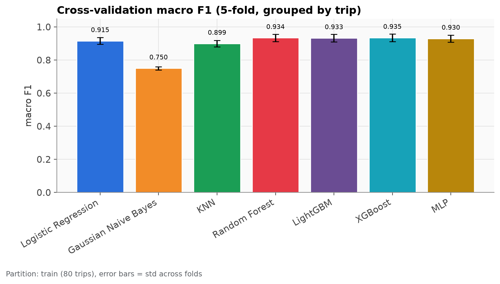
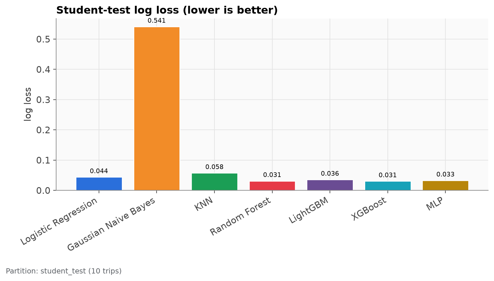
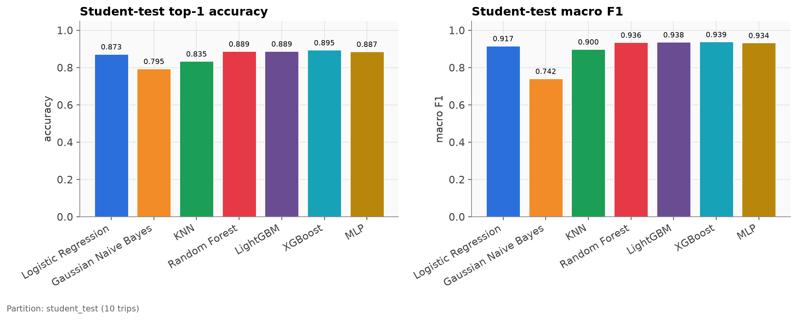
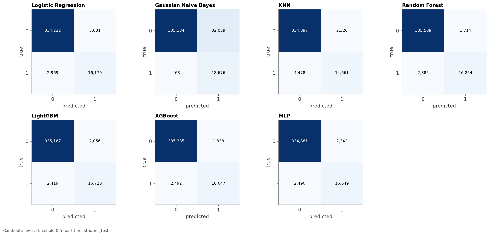
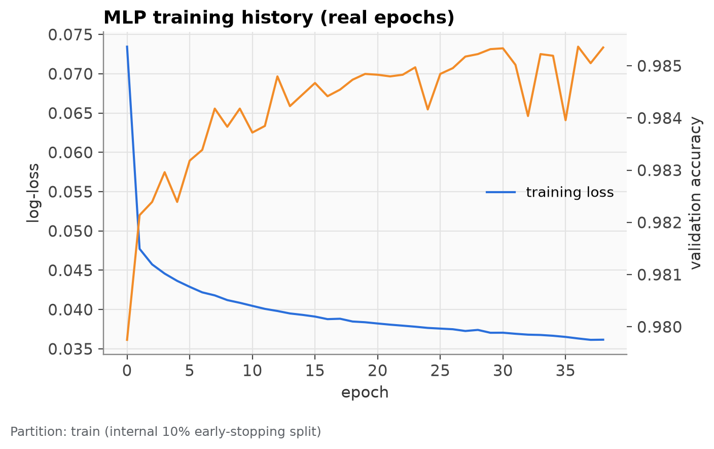
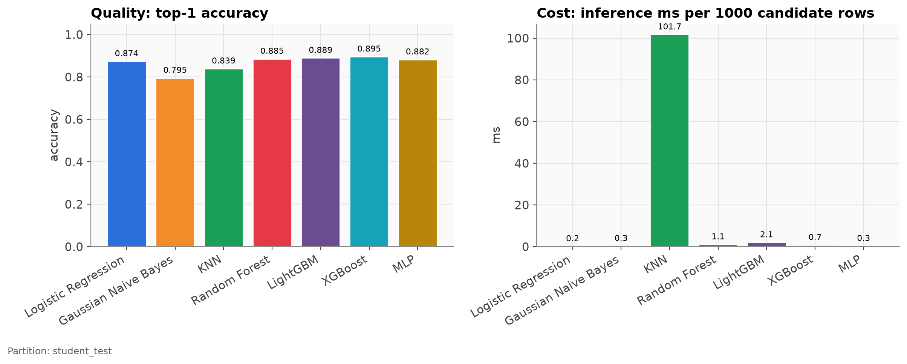
1. Hyperparameters searched and 2. ranges
| Hyperparameter | Distribution | Range | Untuned | Best found |
|---|---|---|---|---|
| n_estimators | integer, uniform | 100 – 700 | 300 | 408 |
| learning_rate | log-uniform | 0.02 – 0.3 | 0.1 | 0.0907 |
| max_depth | integer, uniform | 3 – 12 | 8 | 10 |
| min_child_weight | log-uniform | 1 – 30 | 1 | 1.170 |
| subsample | uniform | 0.5 – 1 | 1 | 0.607 |
| colsample_bytree | uniform | 0.5 – 1 | 1 | 0.654 |
| reg_lambda (λ) | log-uniform | 0.01 – 30 | 1 | 0.237 |
| reg_alpha (α) | uniform | 0 – 5 | 0 | 3.431 |
| gamma (γ) | uniform | 0 – 5 | 0 | 1.663 |
The ranges bracket the library defaults on both sides; regularisation ranges were chosen wide because the untuned model showed the largest train–test gap.
3. Objective
Maximise mean observation-level top-1 accuracy over the same 5 trip-grouped folds of the 78 train trips (the primary metric of Section 3). Student_test and the evaluator trips play no part.
4. Number of trials and method
Optuna's Tree-structured Parzen Estimator (TPE), seed 42, 60 trials in 14.0 minutes on the GPU. TPE splits finished trials into a good and a bad group, fits a density to each (l(x), g(x)), and proposes values where l(x)/g(x) is highest, so later trials concentrate on the promising region. A MedianPruner (6 start-up trials, 1 warm-up step) stopped a trial after any fold whose running mean fell below the median of earlier trials at that fold: 12 trials completed and 48 were pruned. The full search record is kept in results/tuning/trials.csv and results/tuning/study.db.
5. Best values
Best trial #23, CV top-1 0.8869; values in the table above (results/tuning/best_params.json). The exported model (artifacts/xgb_tuned.json, scripts/07_export_model.py) was refitted on all 78 train trips with these values.
6. Did the tuned model outperform the untuned one?
| Model | CV macro F1 | CV top-1 | Student-test top-1 | Student-test macro F1 | Log loss | Inference (ms / 1k rows) | Train time |
|---|---|---|---|---|---|---|---|
| XGBoost untuned | 0.9349 | 0.8857 | 0.8952 | 0.9393 | 0.0305 | 0.117 | 5.1 s |
| XGBoost tuned (Bayesian) | 0.9353 | 0.8869 | 0.8995 | 0.9412 | 0.0299 | 0.116 | 7.0 s |
Source: results/tuning/tuned_vs_untuned.csv (both models measured in the same run, same data and partitions).
Yes, on every metric, but by a small margin: +0.12 points CV top-1, +0.43 points student-test top-1, and slightly better calibrated probabilities, at unchanged inference speed. Most completed trials scored within 0.003 of each other, so the default configuration was already close to the plateau; the model is limited by the information in the features more than by its hyperparameters. The search moved toward deeper trees held back by stronger pruning and shrinkage (γ 0 → 1.66, α 0 → 3.43) and by row and column subsampling, which is consistent with the overfitting measured in Section 3.2.6. Importance estimated from the completed trials (Figure 20) ranks reg_lambda and colsample_bytree highest and learning_rate and max_depth lowest; with only 12 completed trials this ranking is indicative.
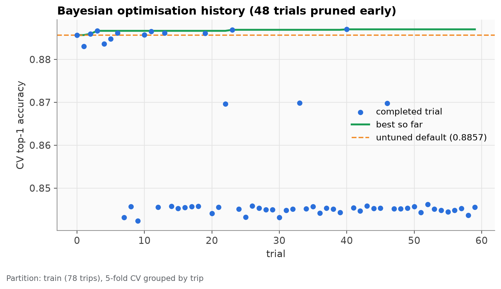
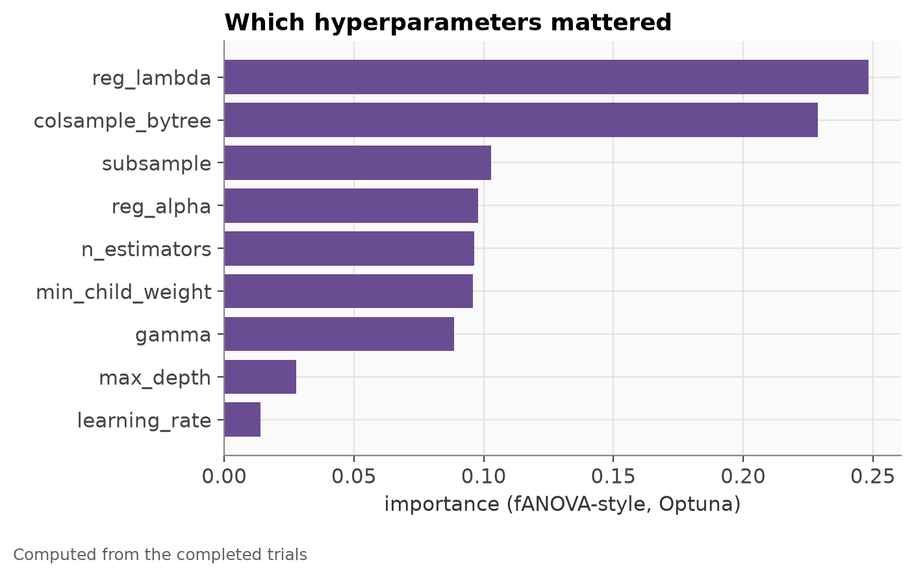
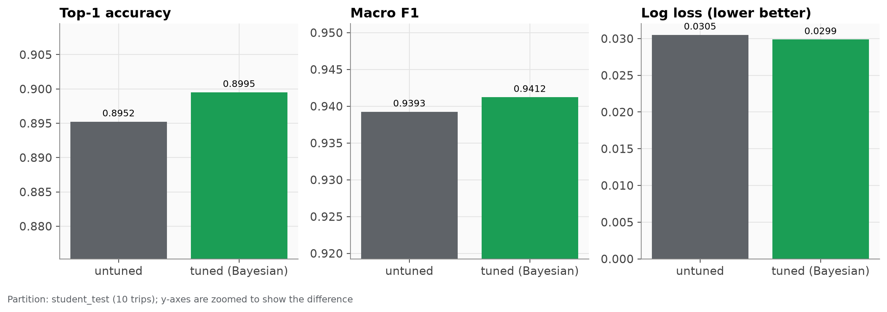
The classifier scores each point independently, so its best candidates can form an impossible sequence (main road, a parallel street, back to the main road within two seconds). The HMM adds sequence and network information. Code: src/hmm.py, scripts/09_probs.py, scripts/10_hmm.py; log: results/hmm/hmm_run.log.
1. Hidden states
At GPS point k the hidden state is the arc the vehicle is on, restricted to the 8 candidates with the highest classifier probability. The reference arc is among these 8 for 99.8 % of student-test points whose reference arc is a candidate at all. Each state keeps its arc id, so the decoded state maps directly back to a road segment.
2. Emission
The log of the tuned XGBoost probability of that candidate, log pk(b), clipped at 10−6. Distance, heading and neighbouring-point fit are already inside the classifier, so the emission does not recompute geometry.
3. Transitions
If the vehicle moved 20 m in a straight line, an arc reachable in about 20 m of driving is plausible; one that needs a long detour is not. These are log-scores rather than normalised probabilities (a scoring HMM in the spirit of Newson and Krumm's map-matching HMM). Viterbi maximises Σk[log pk(sk) + log T(sk−1→sk)]:
Because the bounded shortest-path distances are computed once per trip and cached (the same idea as Fast Map Matching), decoding all 182,465 training transitions takes about 2 s. We verified the implementation against an independent re-implementation (networkx shortest paths, plain-Python Viterbi) on three student-test trips: identical route distances and 100 % identical decoded arcs.
4. Missing candidates and large GPS gaps
fill_missing), so every observation has a prediction. 717 such points in train, none in student_test.5. Consecutive observations on disconnected segments
Unreachable transitions are penalised (break_pen), not forbidden, so a missing candidate, a fragmented network or a break in the reference route cannot trap the decoder. The final arc sequence is stitched into a route (stitch_route): consecutive arcs that are not directly connected are joined by the bounded shortest network path (≤ 1.5 km). On student_test every join could be bridged.
The six decoder parameters were tuned with Optuna TPE (seed 42, 150 trials, 4.8 min) on all 78 reliable train trips, maximising top-1. Search ranges: w_t log [0.2, 30], β log [5, 200] m, break_pen [2, 200], uturn_pen [0, 40], gap_s [5, 600] s, gap_pen [0, 30]; no best value lies at a range edge. The classifier probabilities for the train trips are out-of-fold (each trip scored by a 5-fold model that never saw it, scripts/09_probs.py); probabilities from a model trained on the same trips would be over-confident and would teach the decoder to under-weight the map. Trial 0 was the hand-chosen default (w_t 1, β 30, break_pen 8, uturn_pen 4, gap_s 20, gap_pen 2): 92.19 %. Best: w_t 7.99, β 13.75 m, break_pen 147.8, uturn_pen 25.9, gap_s 299 s, gap_pen 24.6: 94.35 %. Student_test was not used to tune the decoder.
6. Did HMM decoding improve the route?
| Partition | Method | Top-1 (ref. arc is a candidate) | Top-1 (all points) | Route continuity | Route F1 (matched arcs) | Route F1 (full .route) |
|---|---|---|---|---|---|---|
| student_test | Classifier only | 0.8995 | 0.8985 | 0.9384 | 0.9289 | 0.8103 |
| student_test | Classifier + HMM (default settings) | 0.9344 | 0.9334 | 0.9783 | 0.9698 | 0.9597 |
| student_test | Classifier + HMM (tuned) | 0.9651 | 0.9640 | 0.9818 | 0.9719 | 0.9775 |
| train (out-of-fold) | Classifier only | 0.8861 | 0.8798 | 0.9458 | 0.9118 | 0.8046 |
| train (out-of-fold) | Classifier + HMM (tuned) | 0.9435 | 0.9360 | 0.9811 | 0.9641 | 0.9609 |
Source: results/hmm/hmm_vs_classifier.csv. Route F1 (full .route) compares the stitched predicted route with the complete reference arc set (sequence-level metric). The train rows are in-sample for the decoder settings; student_test is the clean estimate.
Yes. On student_test the HMM raises top-1 by 6.6 points, continuity by 4.3 points and sequence-level route F1 from 0.810 to 0.978. The route F1 jump is the largest because classifier-only choices flicker between twins and parallel streets; stitching such a sequence pulls many wrong arcs into the route, whereas a coherent decoded sequence only needs real gaps filled.
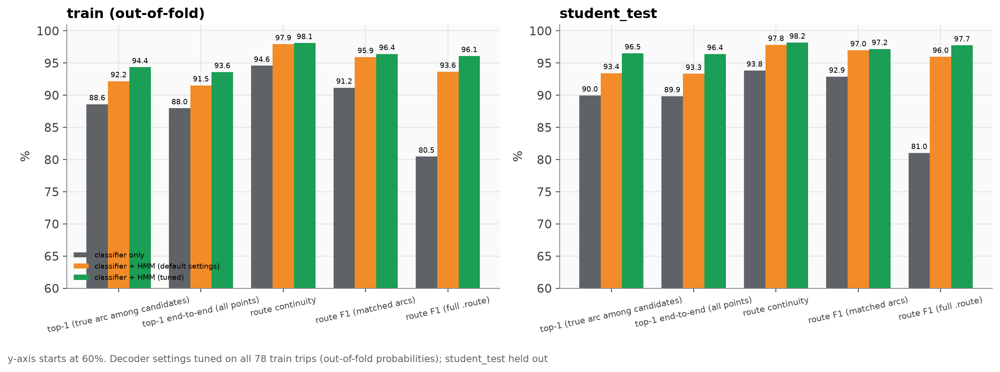
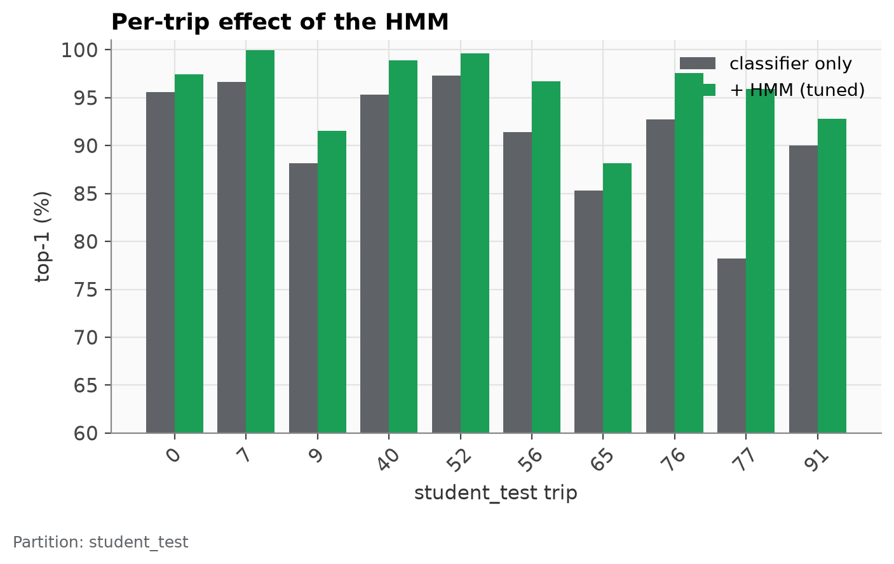
Maps are generated by src/viz.py (build_trip_map) from scripts/02_trip_map.py and scripts/10_hmm.py, and live in the UI (ui/app.py). Each map has switchable base layers (OpenStreetMap, light grey, satellite), separate layers for the road network, reference route, predicted route (dashed, with direction arrows) and raw GPS points, start and end markers, a legend, a layer control and a scale bar, and is fitted to the trip's extent. The interactive HTML files are committed: results/eda/trip_00000003_map.html, results/eda/trip_00000033_map.html, results/hmm/map_student_test_00000077.html.
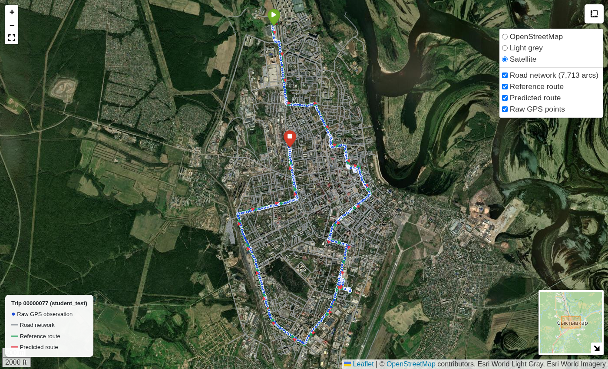
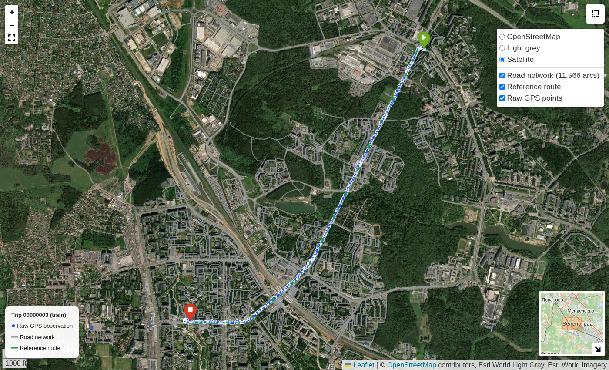
Architecture. Laptop 1 runs the FastAPI backend (api/main.py): it holds the exported model and configuration (artifacts/), the road networks and the reference routes, runs the full pipeline (src/pipeline.py) and scores the result server-side (src/scoring.py). Laptop 2 runs the Streamlit UI (ui/app.py), which needs only ui/requirements.txt and no model or data. Endpoints: GET /health, GET /sets, GET /trips?trip_set=…, POST /predict with {"trip_set", "trip_id", "include_network"}.
Request flow. The UI lists the trips offered by the API; the evaluator selects one; the UI sends the trip id; the API validates it (unknown ids, including path-traversal attempts, return 404), loads the raw files, predicts from the GPS track and network only, then compares the prediction with the reference route and returns the route geometry, snapped points, metrics and timings. Reference arcs never leave Laptop 1 and are never seen by the prediction code. Every request is logged in the Laptop 1 terminal with client address, trip, sizes, metrics and time.
Latency. Mean 0.28 s of pipeline time per evaluator trip on the CPU (maximum 0.65 s); for trip 77 (3,911 points): candidates and features 0.19 s, XGBoost 0.10 s, HMM 0.30 s, stitching 0.004 s.
Deployment. Laptop 1: pip install -r requirements.txt, then uvicorn api.main:app --host 0.0.0.0 --port 8000 --no-access-log. Laptop 2: pip install -r ui/requirements.txt, then streamlit run ui/app.py and enter http://<laptop-1-ip>:8000 as the API address. Both laptops must be on the same network with port 8000 reachable.
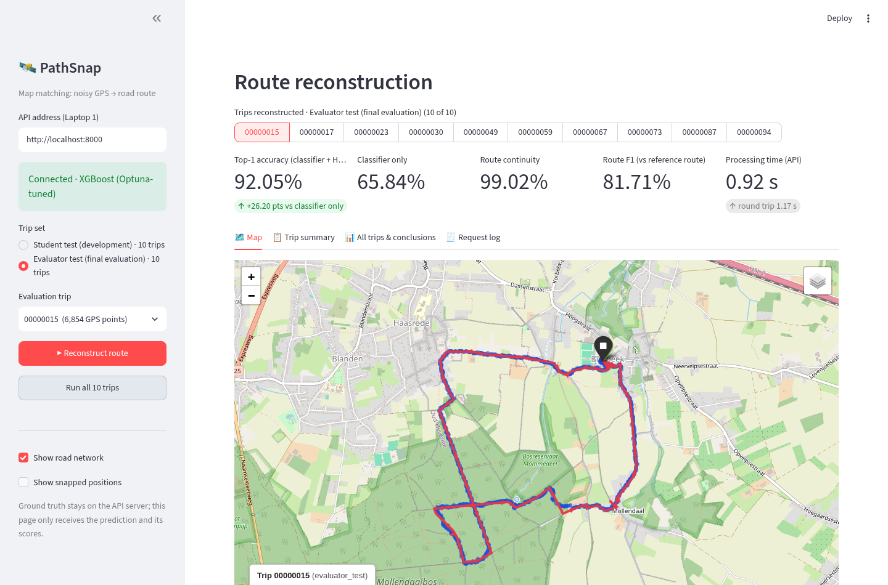
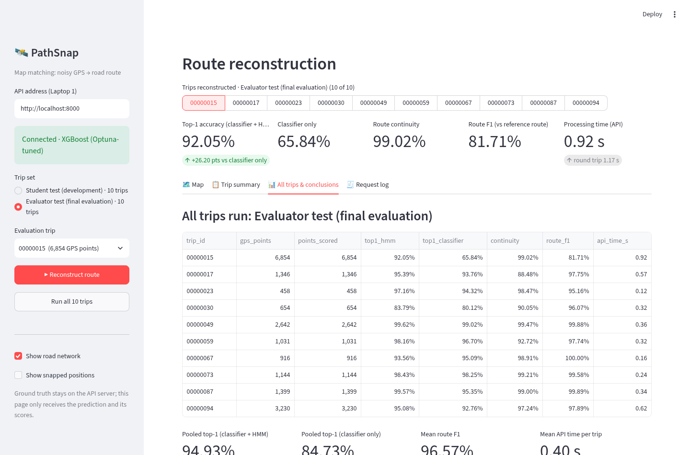
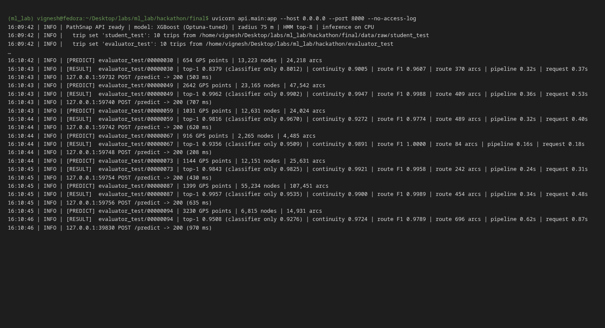
After the classifier, its hyperparameters and the decoder settings were frozen, the 10 evaluator trips were run once through the unchanged pipeline (scripts/11_check_pipeline.py, results/pipeline/check_evaluator_test.csv). Nothing was changed afterwards.
| Trip | Points | Top-1 classifier only | Top-1 + HMM | Continuity | Route F1 | Time (s) |
|---|---|---|---|---|---|---|
| 00000015 | 6,854 | 0.6584 | 0.9205 | 0.9902 | 0.8171 | 0.65 |
| 00000017 | 1,346 | 0.9376 | 0.9539 | 0.8848 | 0.9775 | 0.38 |
| 00000023 | 458 | 0.9432 | 0.9716 | 0.9847 | 0.9516 | 0.13 |
| 00000030 | 654 | 0.8012 | 0.8379 | 0.9005 | 0.9607 | 0.22 |
| 00000049 | 2,642 | 0.9902 | 0.9962 | 0.9947 | 0.9988 | 0.24 |
| 00000059 | 1,031 | 0.9670 | 0.9816 | 0.9272 | 0.9774 | 0.23 |
| 00000067 | 916 | 0.9509 | 0.9356 | 0.9891 | 1.0000 | 0.10 |
| 00000073 | 1,144 | 0.9825 | 0.9843 | 0.9921 | 0.9958 | 0.16 |
| 00000087 | 1,399 | 0.9535 | 0.9957 | 0.9900 | 0.9989 | 0.24 |
| 00000094 | 3,230 | 0.9276 | 0.9508 | 0.9724 | 0.9789 | 0.44 |
| Pooled / mean | 19,674 | 0.8473 | 0.9493 | 0.9657 | 0.28 |
Accuracy on unseen evaluator trips (94.9 %) is close to student_test (96.5 %), so the pipeline generalises. Pooled classifier-only accuracy is lower than on student_test mainly because of trip 15 (6,854 points, 65.8 %), where the HMM recovers 26 points. Weak points: trip 30 (83.8 % top-1, continuity 90 %), trip 15 (route F1 0.82), trip 17 (continuity 0.88), and trip 67, where the HMM lowered top-1 (95.1 % → 93.6 %) although its route F1 is 1.0.
Treating map matching as candidate classification plus sequence decoding works well on this dataset. Most of the classifier's accuracy comes from direction features that separate arcs from their reverse twins (−23 points when removed); the choice among strong tabular models matters far less. The HMM is the largest single improvement after the features: it raises observation-level accuracy from 90.0 % to 96.5 % on student_test and route F1 from 0.81 to 0.98, and it carries over to the unseen evaluator trips (94.9 %). The full pipeline runs in well under a second per trip on a CPU and is deployed as a two-laptop API and UI with ground truth kept server-side.
.route; the API logs every request.01–11 regenerate every table and figure (see README); configurations, trial records (trials.csv, study.db, decoder_trials.csv) and run logs are committed. XGBoost and the MLP were trained on an NVIDIA GPU, which is not bit-for-bit deterministic, so reruns may differ in the last decimals.